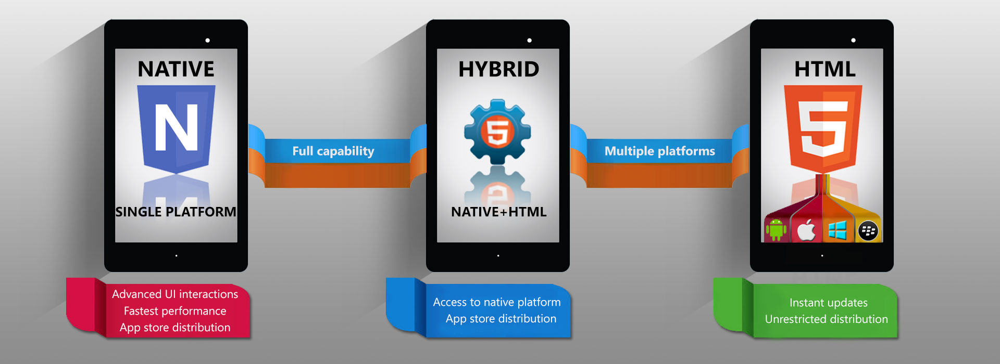
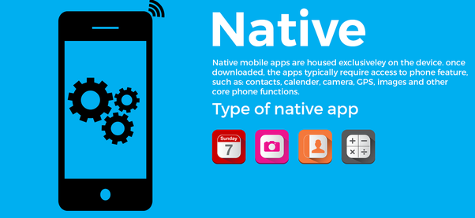
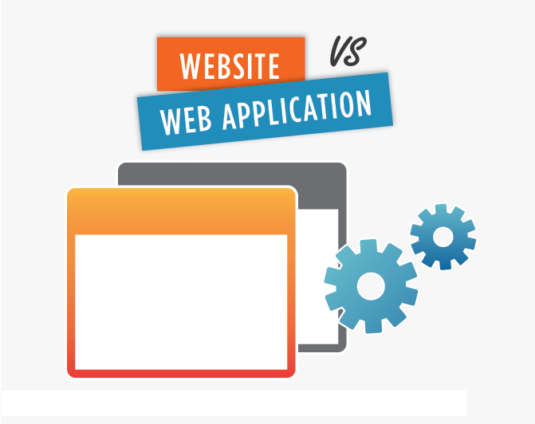
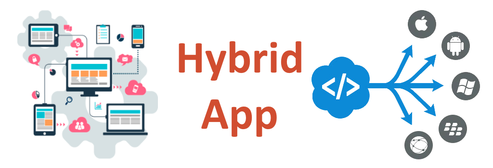

There's no doubt that computers have become an integral part of our lives, both in and out of the workplace. There's big demand for people with top-notch computer skills. This demand typically arises through one of two ways: either there are plenty of jobs requiring a particular program or skill set, or there is demand in very small, niche areas, where few people have the exact knowledge required for that specialized program in the ever-evolving technology industry .
With the advancement of new software courses and remarkable software product development, more and more employees and professionals are needed in this field. It companies continue recruiting in large numbers from engineering college all-round the year
The reports suggest that the IT sector contributes a whopping 54% of all sectors to the Indian GDP. There is a high demand for IT talent across the nation for different fields like SQL, ASP.Net and more. With the concept of Digital India, the government has made it very clear that Information Technology department has a long role to play in the economy of the nation. There has been a giant growth in aspiring businessmen and technology driven startup. While there has been a remarkable rise in job seekers for PHP talent
Here are some courses that could help you seek best job opportunities in IT sector:
Mobile app development
Web Programming/application development
Database administration (DBA)
Hadoop
Cloud Computing
PHP
About PHP
mobile application development (Definition):
Mobile application development is the set of processes and procedures involved in writing software for small, wireless computing devices such as smartphones or tablets.
Mobile application development is similar to Web application development and has its roots in more traditional software development. One critical difference, however, is that mobile applications (apps) are often written specifically to take advantage of the unique features a particular mobile device offers. For instance, a gaming app might be written to take advantage of the iPhone's accelerometer.
One way to ensure that applications show optimum performance on a given device is to develop the application (app) natively on that device. This means that at a very low level, the code is written specifically for the processor in a particular device. When an app needs to run on multiple operating systems, however, there is little -- if any -- code that can be reused from the initial development. The application must essentially be rewritten for each specific device.
In the future, it's expected that a majority of mobile application development efforts will focus on creating browser-based applications that are device-agnostic. Browser-based applications are simply websites that are built for mobile browsers. Such sites are built to load quickly over a cellular network and have finger-friendly navigation.
Types of apps
Apps are much like desktop software in that they’re designed using a wide range of programming languages and frameworks. While the most popular operating systems, iOS and Android, have done an excellent job in standardizing the types of mobile app development available for programmers to make, apps can take on a wide range of shapes in some of the following ways:
Native apps
HTML apps
Hybrid apps

website designing:
Web programming, also known as web development, is the creation of dynamic web applications. Examples of web applications are social networking sites like Facebook or e-commerce sites like Amazon.
There are two broad divisions of web development – front-end development (also called client-side development) and back-end development (also called server-side development).
Front-end development refers to constructing what a user sees when they load a web application – the content, design and how you interact with it.
This is done with three codes:
HTML
CSS
JavaScript
Back-end development refers to your website or dynamic web application is a sum of layers—structure, design and content, and functionality. The technology and programming that “power” a site—
what your end user doesn’t see but what makes the site run—is called the back end. Consisting of :
the Server
The Database
The Server-Side Applications
The back end is the machine that runs a site—the user doesn’t see it or directly interact with it as with client-side technology, but it’s always running in the background, delivering smooth functionality, a desktop-like experience, and information from the database right into the browser.
Front-end development
What is HTML?
HTML is the standard markup language for creating Web pages.
HTML stands for Hyper Text Markup Language
HTML describes the structure of Web pages using markup
HTML elements are the building blocks of HTML pages
HTML elements are represented by tags
HTML tags label pieces of content such as "heading", "paragraph", "table", and so on
Browsers do not display the HTML tags, but use them to render the content of the page
What is CSS?
CSS stands for Cascading Style Sheets
CSS describes how HTML elements are to be displayed on screen, paper, or in other media
CSS saves a lot of work. It can control the layout of multiple web pages all at once
External stylesheets are stored in CSS files
JavaScript
JavaScript is a programming language used to make webpages interactive. It is what gives a page life—the interactive elements and animation that engage a user. If you've ever used a search box on a home page, checked a live baseball score on a news site, or watched a video, JavaScript is probably running through it.
The great thing about JavaScript is that you don't need to know how to write it in order to use it in your web code. You can find plenty of prewritten JavaScripts for free online. All you need to know to be able to use such scripts is how to paste the supplied code into the right places on your web page.
Although you don't need to write JavaScript in order to use it, some coders just like knowing how to do it themselves. It is an interpreted language, so no special program is required to create usable code. A plain text editor like Notepad for Windows is all you need to write JavaScript. That said, markdown editor might make the process easier, particularly as the lines of code add up.
Back-end development
What Is a Server ?
A server is a computer designed to process requests and deliver data to other (client) computers over a local network or the internet. Although any computer running special software can function as a server, the most typical use of the word references the very large, high-powered machines that function as the pumps pushing and pulling data across the internet.
Common Types of Servers
A large, general-purpose network supporting a medium-sized company will likely deploy several different types of servers:
Web servers, to show pages and run apps in connecting Web browsers
Email servers, to facilitate the sending and receiving of messages
FTP servers, to support the moving of files through File Transfer Protocol tools
Identity servers, to support logins and security roles for authorized users
What is Data?
In simple words data can be facts related to any object in consideration.For example your name, age, height, weight, etc are some data related to you. A picture , image , file , pdf etc can also be considered data.
What is a Database?
Database is a systematic collection of data. Databases support storage and manipulation of data. Databases make data management easy.
For example: Your electricity service provider is obviously using a database to manage billing , client related issues, to handle fault data, etc.
What is a server side program?
Server-side scripting is a technique used in web development which involves employing scripts on a web server which produce a response customized for each user's (client's) request to the website. Server-side scripting is often used to provide a customized interface for the user.
In the context of the World Wide Web, commonly encountered server-side computer languages include:
C# or Visual Basic in ASP.NET environments
Java
PHP
Perl
Python
What does Database Administrator (DBA) mean?
A database administrator (DBA) directs or performs all activities related to maintaining a successful database environment. Responsibilities include designing, implementing, and maintaining the database system; establishing policies and procedures pertaining to the management, security, maintenance, and use of the database management system; and training employees in database management and use. A DBA is expected to stay abreast of emerging technologies and new design approaches. Typically, a DBA has either a degree in Computer Science and some on-the-job training with a particular database product or more extensive experience with a range of database products.
A DBA is typically also responsible for other secondary, but still critically important, tasks and roles. Some of these include:
Database Security: Ensuring that only authorized users have access to the database and fortifying it against any external, unauthorized access.
Database Tuning: Tweaking any of several parameters to optimize performance, such as server memory allocation, file fragmentation and disk usage.
Backup and Recovery: It is a DBA's role to ensure that the database has adequate backup and recovery procedures in place to recover from any accidental or deliberate loss of data.
Producing Reports from Queries: DBAs are frequently called upon to generate reports by writing queries, which are then run against the database.
It is clear from all the above that the database administration function requires technical training and years of experience. Some companies that offer commercial database products, such as Oracle DB and Microsoft's SQL Server, also offer certifications for their specific products. These industry certifications, such as Oracle Certified Professional (OCP) and Microsoft Certified Database Administrator (MCDBA), go a long way toward assuring organizations that a DBA is indeed thoroughly trained on the product in question. Because most relational database products today use the SQL language, knowledge of SQL commands and syntax is also a valuable asset for today's DBAs.
Hadoop
Hadoop is an Apache open source framework written in java that allows distributed processing of large datasets across clusters of computers using simple programming models. A Hadoop frame-worked application works in an environment that provides distributed storage and computation across clusters of computers. Hadoop is designed to scale up from single server to thousands of machines, each offering local computation and storage.
Hadoop Architecture
Hadoop framework includes following four modules:
Hadoop Common: These are Java libraries and utilities required by other Hadoop modules. These libraries provides filesystem and OS level abstractions and contains the necessary Java files and scripts required to start Hadoop.
Hadoop YARN: This is a framework for job scheduling and cluster resource management.
Hadoop Distributed File System (HDFS™):A distributed file system that provides high-throughput access to application data.
Hadoop MapReduce: This is YARN-based system for parallel processing of large data sets.
Cloud Computing
Cloud Computing is trending in today’s technology driven world. With the advantages of flexibility, storage, sharing and easy accessibility, Cloud is being used by major players in IT.
Apart from companies, individuals also use Cloud technologies for various daily activities. From using Google drive to store, to Skype to chat and Picasa web albums, we use Cloud Computing platforms extensively. Cloud Computing is a service provided via virtual networks, especially the world wide web.
Cloud Certification Cloud Computing architecture refers to the various components and sub-components of cloud that constitute the structure of the system. Broadly, this architecture can be classified into two sections:
Front-end
Back-end
The front-end and back-end are connected to each other via a virtual network or the internet. There are other components like Middleware, Cloud Resources, etc, that are part of the Cloud Computing architecture.
Front-end is the side that is visible to the client, customer or the user. It includes the client’s computer system or network that is used for accessing the cloud system. Different Cloud Computing systems have different user interfaces. For email programs, support is driven from web browsers like Firefox, Chrome, and Internet Explorer.
Back-end is the side used by the service provider. It includes various servers, computers, data storage systems, and virtual machines that together constitute the cloud of computing services. This system can include different types of computer programs. Each application in this system is managed by its own dedicated server. The back-end side has some responsibilities to fulfill for the client
To provide security mechanisms, traffic control and protocols
To employ protocols that connects networked computers for communication
Native apps
The term "native app" is often mentioned in the context of mobile computing because mobile applications have traditionally been written to work on a specific device platform. A native app is installed directly on a mobile device and developers create a separate app version for each mobile device. The native app may be stored on the mobile device out of the box, or it can be downloaded from a public or private app store and installed on the mobile device. Data associated with the native app is also stored on the device, although data can be stored remotely and accessed by the native app. Depending on the nature of the native app, Internet connectivity may not be required.
The term "native app" is often mentioned in the context of mobile computing because mobile applications have traditionally been written to work on a specific device platform. A native app is installed directly on a mobile device and developers create a separate app version for each mobile device. The native app may be stored on the mobile device out of the box, or it can be downloaded from a public or private app store and installed on the mobile device. Data associated with the native app is also stored on the device, although data can be stored remotely and accessed by the native app. Depending on the nature of the native app, Internet connectivity may not be required.

HTML apps
HTML apps are not real applications; they are really websites that, in many ways, look and feel like native applications, but are not implemented as such. They are run by a browser and typically written in HTML5. Users first access them as they would access any web page: they navigate to a special URL and then have the option of “installing” them on their home screen by creating a bookmark to that page.

Web apps became really popular when HTML5 came around and people realized that they can obtain native-like functionality in the browser. Today, as more and more sites use HTML5, the distinction between web apps and regular web pages has become blurry.
Hybrid apps
A hybrid application (hybrid app) is one that combines elements of both native and Web applications. Native applications are developed for a specific platform and installed on a computing device. Web applications are generalized for multiple platforms and not installed locally but made available over the Internet through a browser. Hybrid apps are often mentioned in the context of mobile computing.

Hybrid application features:
Can function whether or not the device is connected.
Integration with a device’s file system.
Integration with Web-based services.
An embedded browser to improve access to dynamic online content.
Most applications could be considered hybrid apps. Web apps, such as online banking services, typically store some content locally; locally stored native apps, such as Microsoft Word, also interface to the Internet.